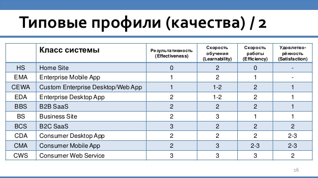

Типовые профили качества UI
Результативность (effectiveness)
Процент успешного завершения сценариев необученным пользователем.
Должен составлять не менее:
- Уровень качества 0: -
- Уровень качества 1: 66%
- Уровень качества 2: 80%
- Уровень качества 3: 95%
Скорость обучения (learnability)
Длительность обучения, необходимая для доведения результативности до 95%
Не должна превышать:
- Уровень качества 0: -
- Уровень качества 1: 240 мин.
- Уровень качества 2: 10 мин.
- Уровень качества 3: 0
Продуктивность (efficiency) - скорость работы обученного пользователя
Среднее время выполнения поисковых сценариев в 80% случаев, не должно превышать:
- Уровень качества 0: -
- Уровень качества 1: 3 мин
- Уровень качества 2: 1 мин
- Уровень качества 3: 0.3 мин
Нормы профилей качества для разных типов систем
